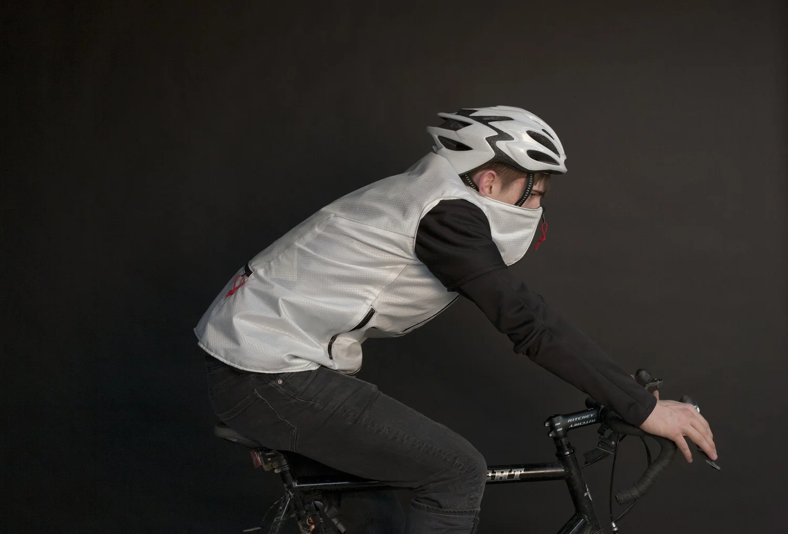
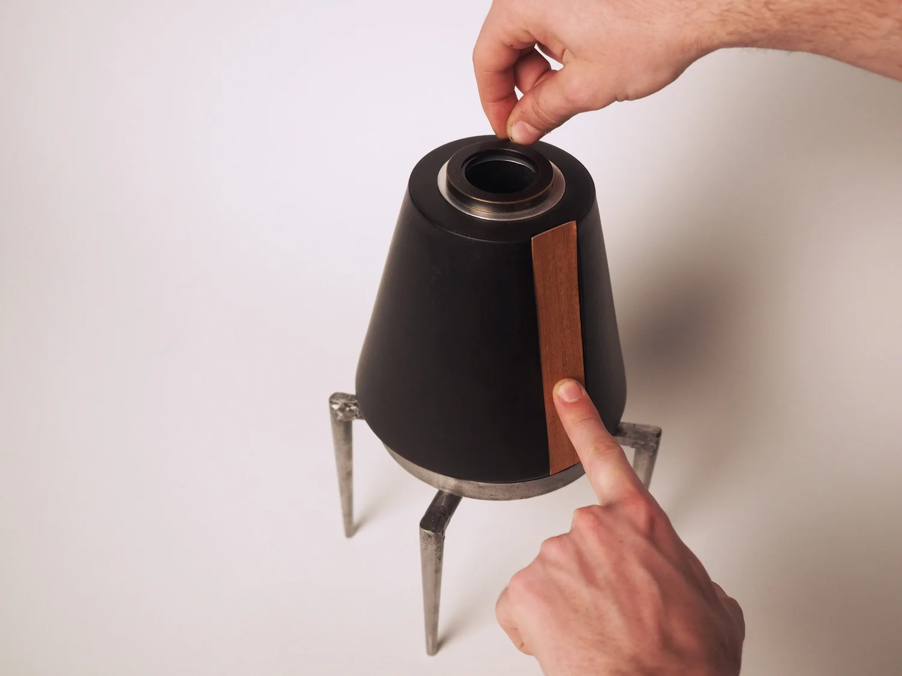

Softgoods
Temperature-regulating Cycling Jacket
A softgoods project me and some buddies took on as cyclists. In Pittsburgh the weather and temperature is so temperamental that it may be below freezing in the morning and then in the 50s or 60s in the afternoon. We wanted to make a jacket that allows the wearer to change the level of insulation through air or argon — which changes the insulation value. Inside we have a fabric-welded bladder that can fill with air.

Industrial Design
A radio controlled by light and touch

Industrial Design
A lamp controlled by a camera iris
If a camera uses an iris to let light in, this lamp uses one to let light out. Salvaged from an old camera, the iris controls the amount of light that passes through — opening and closing to dim or brighten the room. The lamp itself is made from dyed maple wood and welded steel.